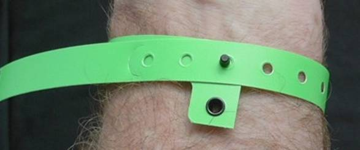

THE NAVLIGHT SYSTEM WRC2010
The NavLight system has two main components; the Punches and the Tags. The Punches are powered by one AA battery and hang from a cord at each checkpoint. The Tags are unpowered and are worn on the wrist by the competitors. They are attached with a security band. When you visit a checkpoint you record your visit by inserting the Punch into the Tag; a process which typically takes half a second. A red light flashes regularly to indicate that your visit has been recorded. Apart from the Checkpoint Punches, there are some special-purpose punches which you MUST be aware of. They look the same as normal Punches but have been allocated a special Status. · Use a BRIEF Punch before the event start. · Use a FINISH Punch whenever you return to the Administration area. · Use a DEPART Punch if you have returned and go out again.
After you have used the FINISH Punch at the end of the event an organiser will remove your tag from your wrist (do not remove it youself) and it will be scored. Wait for your printout which will look something like this: (Start time was 6:40:00 PM.) ___________________________________________________________________________________ Team No. 62 Tag ID = ACBA Tags=0017
Line # PunchID Value Time Punched Split Time. 1 66 21/12/2005 6:35:41 PM BRIEFING. Score reset. 2 26 20 21/12/2005 6:44:43 PM 0:04:43 3 21 20 21/12/2005 6:58:12 PM 0:13:29 4 30 30 21/12/2005 7:01:18 PM 0:03:06 5 48 40 21/12/2005 7:06:30 PM 0:05:12 6 37 30 21/12/2005 7:17:30 PM 0:11:00 7 53 50 21/12/2005 7:27:21 PM 0:09:51 8 38 30 21/12/2005 7:33:51 PM 0:06:30 9 38 21/12/2005 7:33:52 PM 0:00:00 Punched on Line 8 10 41 40 21/12/2005 7:44:20 PM 0:10:28 11 60 60 21/12/2005 7:56:10 PM 0:11:50 12 55 50 21/12/2005 8:02:56 PM 0:06:46 13 44 40 10/12/2004 1:05:20 PM Before Event Start. 14 61 60 21/12/2005 8:50:26 PM 0:47:30 15 28 20 21/12/2005 8:59:33 PM 0:09:07 16 64 21/12/2005 9:42:46 PM 0:43:13 FINISH TIME. 17 65 21/12/2005 9:42:52 PM 0:00:06 FINISH TIME Ignored. END
Recognised finish time 21/12/2005 9:42:46 PM Time on course 3:02:46
490 Points Scored. 30 Late Penalty. Nil Manual adjustment.
FINAL SCORE = 460 ___________________________________________________________________________________
Note that on line 13, the recorded time was a year early. This happens if the battery has been momentarily disconnected in the Punch sometime before you got to it. Although the time is wrong, you still get the points.
The function of special-purpose Punches is described in more detail below. TEST Punch. This is available at Registration for you to try your Tag to see how the system works. It has no effect on your score. If the red light flashes even once, it has worked. BRIEF Punch. One or more BRIEF Punches will be available shortly before the event start. You will usually find the BRIEF Punch as you enter the Briefing area; hence the name. Officials may inspect your Tag to ensure it is properly fastened on your wrist so it is important that each Tag is registered on one of these Punches BEFORE you start the event. FINISH Punch. Several of these will be
available at the finish line. ALL team members with Tags MUST use one as you
finish, as it records your finish time. For a team, the finish time is taken
as the time of the last Tag to finish. DEPART Punch. If you visit the administration area during an event, and use a FINISH Punch when you arrive, you must use a DEPART Punch when you leave again.
Fitting the wristbands The wristbands are made from a rugged vinyl material and can not be removed from the wrist without breaking them. Wear them quite loosely; you should be able to fit two fingers comfortably between the band and your wrist. Over a 24-hour period, a tight strap will cause irritation. Thread the band through your Tag, wrap it around your wrist, then close the clasp through one of the holes in the strap. There is a loose end which you can pull off carefully.

WHAT IF SOMETHING GOES WRONG PUNCH FAILURE: If you encounter a Punch which fails to operate, write down its internal 3-letter Code as evidence that you have visited the checkpoint. This 3-letter code is visible through the transparent plastic cover. However, your team will be credited with the visit only if it can be verified that the Punch has indeed failed.
There is a possibility that the punch has temporarily lost its power. If so, you may have to wait for up to three seconds for a response.
TAG FAILURE: Again, you can only record the internal 3-letter Code inside each Punch you visit. You can rely on the other Tags in your team to record your visit, but tell the organisers when you finish. Your team will be credited with the visit only if it can be verified that your Tag did indeed fail. |